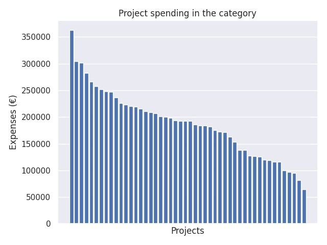

Osaamisperusteisuuden ja asiakaslähtöisyyden edistäminen
Category summary
188K spent on average
363K highest spending

Reports in the category
Vaasan kaupunki/Vaasan ammattiopisto
Project name: REKO-reformia kohti
363K spent
Hyria koulutus Oy
Project name: Virtuaaliamis
304K spent
Koulutuskeskus Salpaus -kuntayhtymä
Project name: TEPPO - Tiedonhallinnalla edellytyksiä prosesseille, poluille ja osaamiselle
301K spent
Länsirannikon Koulutus Oy WinNova
Project name: TEKNO24/7
283K spent
Kiipulasäätiö/Kiipulan ammattiopisto
Project name: Varmuutta Valmasta
266K spent
Turun kaupunki, sivistystoimiala
Project name: Henkilökohtaista!
257K spent
Keski-Uudenmaan koulutuskuntayhtymä
Project name: LOOK - Luodaan onnistunut opiskelijakokemus
252K spent
Itä-Savon koulutuskuntayhtymä
Project name: Joustava henkilökohtaistaminen
248K spent
Espoon seudun koulutuskuntayhtymä Omnia
Project name: AIRE - Aidosti reformiin
248K spent
Jokilaaksojen koulutuskuntayhtymä
Project name: Yksilöllisyyttä sinun opintoihisi 1 (YSO 1)
237K spent
Hämeen ammatti-instituutti Oy
Project name: Luonnonvara-alan reformin kehittäminen ja digiloikka
226K spent
Ami-säätiö
Project name: Osaamisen kumppanit (OSKU)
223K spent
Pohjois-Karjalan koulutuskuntayhtymä
Project name: Lisätty todellisuus ja virtuaaliset oppimisympäristöt
220K spent
Keski-Uudenmaan koulutuskuntayhtymä
Project name: Osaaminen näkyväksi ja valinnat sujuviksi
219K spent
Koulutuskuntayhtymä Tavastia
Project name: VERTUe - Ohjaten ja vertaistukien ammattilaiseksi
216K spent
Espoon seudun koulutuskuntayhtymä Omnia
Project name: Oppimisen uudet ympäristöt: VRobotiikka 360
211K spent
Kotkan-Haminan seudun koulutuskuntayhtymä
Project name: Osaamispolun jatkumo
209K spent
Helmi Liiketalousopisto
Project name: YritysLab Finland
207K spent
Itä-Uudenmaan koulutuskuntayhtymä, Edupoli
Project name: TAIKA - tule asiakkaaksi
201K spent
Satakunnan koulutuskuntayhtymä
Project name: YTOläpsy - Yksilöllinen oppiminen ja digitaaliset ratkaisut läpäisyn vauhdittajina
200K spent
Hyria koulutus Oy
Project name: Aha! - Asiakkuus haltuun!
198K spent
Koulutuskeskus Salpaus -kuntayhtymä
Project name: Rocket 2020 -Rohkeasti Amis
194K spent
Koulutuskuntayhtymä Tavastia
Project name: Kiltakoulut reformiin
193K spent
Helsinki Business College Oy/ Suomen Liikemiesten Kauppaopisto
Project name: PopUpCollege
193K spent
Etelä-Karjalan koulutuskuntayhtymä/Saimaan ammattiopisto Sampo
Project name: Digitutor
193K spent
Työtehoseura ry
Project name: VR teknologia varasto-, kuljetus-, maarakennus- ja metsäalalle
186K spent
Invalidisäätiö/ Keskuspuiston ammattiopisto
Project name: Asennetta Tekoihin
184K spent
Hengitysliitto ry / Ammattiopisto Luovi
Project name: Opin duunissa
184K spent
Etelä-Karjalan koulutuskuntayhtymä / Saimaan ammattiopisto Sampo
Project name: Osaaja diggaa
182K spent
Koulutuskeskus Salpaus - kuntayhtymä
Project name: Validointitehtävä – osaavaa arviointia
175K spent
Keski-Pohjanmaan koulutusyhtymä
Project name: PARVESSA PAREMPI
172K spent
Rovaniemen koulutuskuntayhtymä
Project name: PedaLean
172K spent
Haapaveden Opiston kannatusyhdistys ry
Project name: Osaamispro
163K spent
Jyväskylän koulutuskuntayhtymä
Project name: Osaamisen elävä asiakirja
153K spent
Pohjois-Karjalan koulutuskuntayhtymä
Project name: Opiskeluhuolto työpaikoille
139K spent
Invalidisäätiö/Keskuspuiston ammattiopisto
Project name: Tehoa Telmaan Työllistymällä
138K spent
Svenska Österbottens förbund för utbildning och kultur skn / YA!
Project name: mLearning AR - Mobilt lärande, förstärkt kunnande & spelifiering
127K spent
Svenska Framtidsskolan i Helsingforsregionen Ab / Yrkesinstitutet Prakticum
Project name: Fysisk aktivitet och välmående genom e-Sport
126K spent
Ylä-Savon ammattiopisto
Project name: Digilaukalla hevosalan osaajaksi
126K spent
Svenska Österbottens förbund för utbildning och kultur/Yrkesakademin i Österbott
Project name: Handledning och kriteriebaserad bedömning
120K spent
Lounais-Hämeen ammatillisen koulutuksen ky
Project name: SIMO- Simulaatiolla moniosaajuutta isännöintiin ja kiinteistöjen kunnossapitoon
119K spent
Oulun seudun koulutuskuntayhtymä, Oulun seudun ammattiopisto
Project name: DigOsPe
117K spent
Suomen Urheiluopiston kannatusosakeyhtiö
Project name: Urheiluopistopedagogiikka: 24/7
117K spent
Optima samkommun
Project name: Nya vägar för studier och examen
100K spent
Espoon seudun koulutuskuntayhtymä Omnia
Project name: LENTOON!
96.8K spent
Svenska Österbottens förbund för utbildning o kultur/Yrkesakademin i Österbotten
Project name: Vi gör tillsammans
94.8K spent
Kotkan - Haminan seudun koulutuskuntayhtymä
Project name: Työnantaja-asiakkaan ääni
81.9K spent
Jyväskylän koulutuskuntayhtymä
Project name: Osuvat valinnat oikealle uralle
64.8K spent